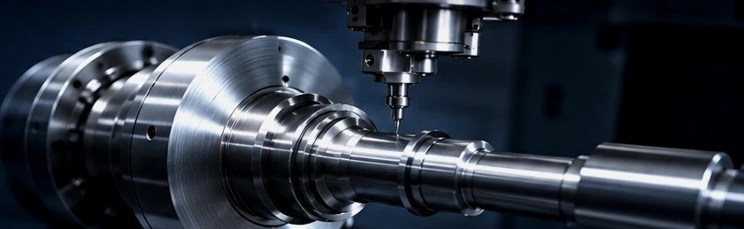
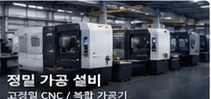
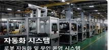
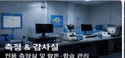
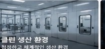
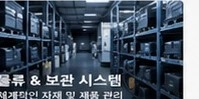

생산 설비CNC / 복합 가공

FACILITIES
최신 CNC 설비, 자동화 시스템, 철저한 품질 관리 환경으로 안정적인 공급과 높은 완성도를 제공합니다.
FACILITIES
정밀 가공부터 검사, 보관, 출하까지 전 공정을 효율적으로 지원합니다.

고정밀 CNC / 복합 가공기

로봇 자동화 및 무인 운영 시스템

전용 측정실 및 항온·항습 관리

청정하고 체계적인 생산 환경

체계적인 자재 및 제품 관리
고정밀 CNC / 복합 가공기
로봇 자동화 및 무인 운영 시스템
전용 측정실 및 항온·항습 관리
청정하고 체계적인 생산 환경
체계적인 자재 및 제품 관리